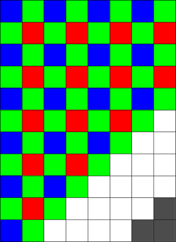
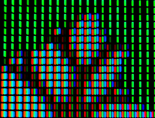

携帯電話やパソコンなどの画面は、赤、緑、青の三色で色を表しています。
上の図のように、横8個、縦11個のます目に途中まで色が塗られています。 色は、1行目は青と緑、2行目は緑と赤、3行目は青と緑のように交互に並びます。
全体が交互に並ぶとき、右下の影の部分はどのような色になるでしょう。正解は
最下行を見ると、青と緑の繰り返しになっている。また、右端の列を見ると、緑と赤の繰り返しになっている。
パソコンや携帯電話の画面では、「赤、緑、青」の三色を組み合わせることで、さまざまな色を表現しています。
元の絵
拡大図
